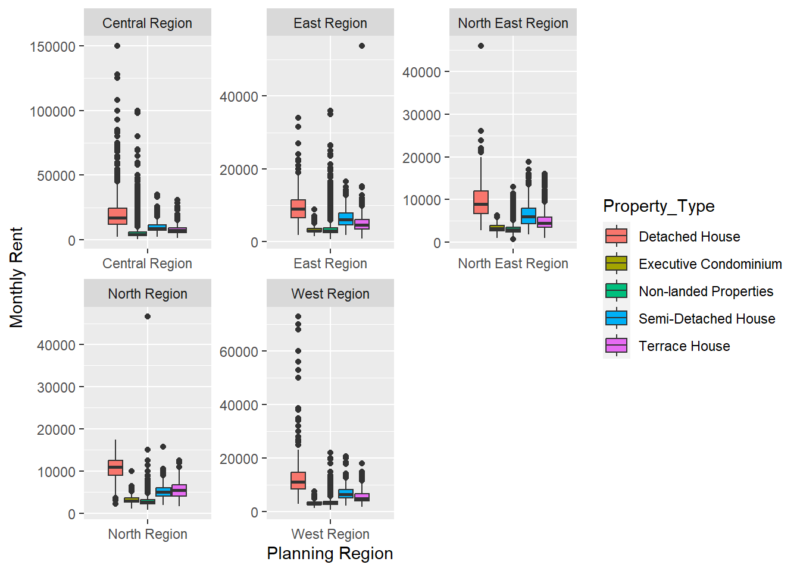
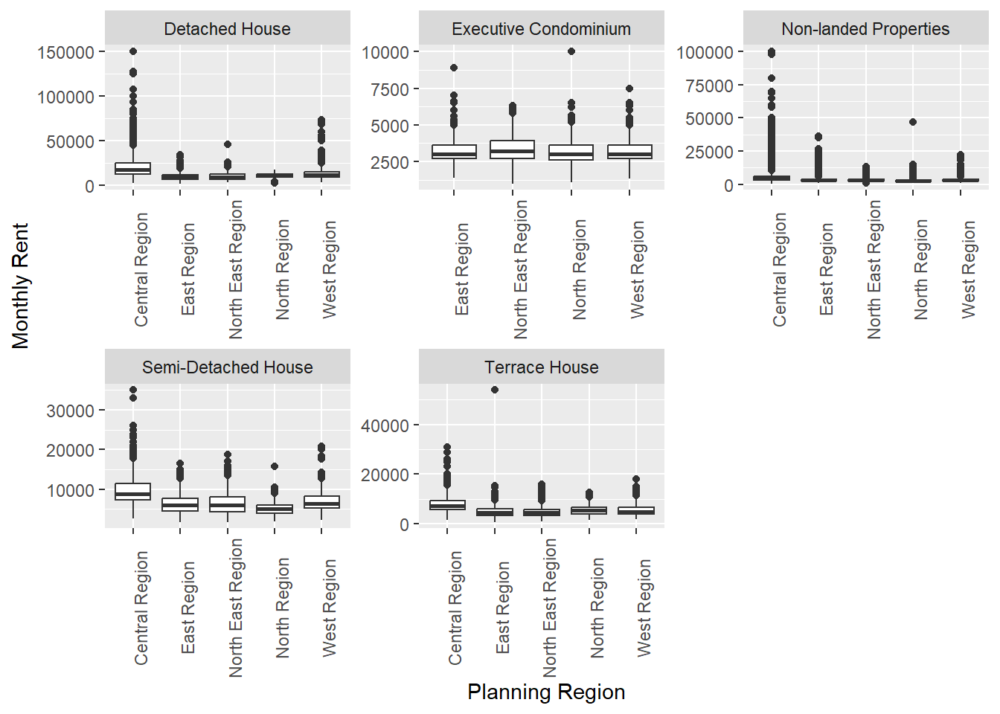
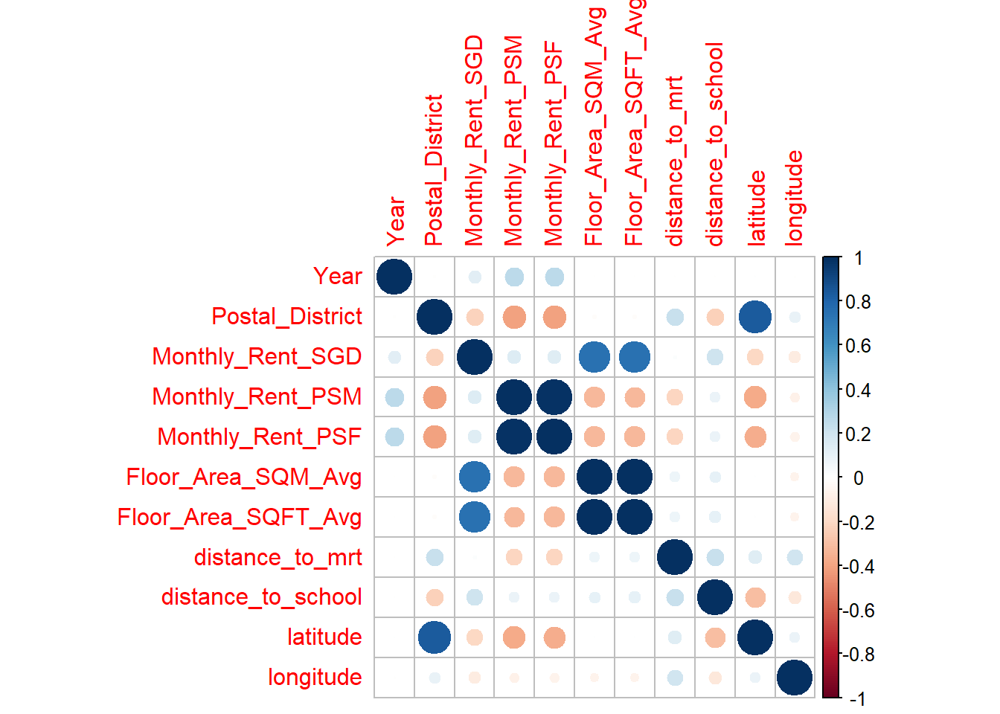
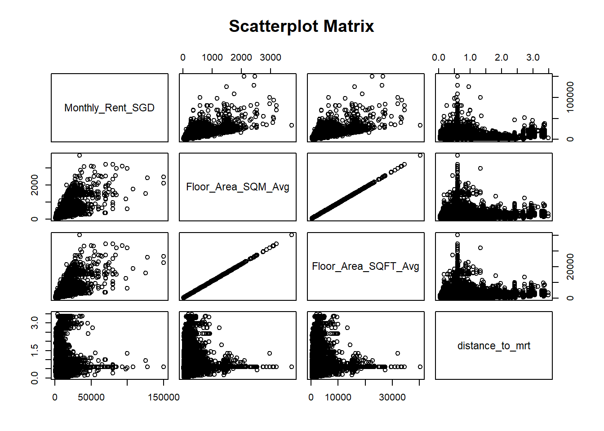

pacman::p_load(poLCA, ggplot2, plotly, tidyverse, corrplot)Take-home Exercise 4: Prototyping Modules for Visual Analytics Shiny Application
1 Overview
1.1 Introduction
In Singapore’s ever-changing rental market, understanding the factors influencing rental prices is crucial for tenants and landlords alike. This study focuses on three key aspects: descriptive analysis, correlation analysis, and clustering analysis.
1.2 Objectives
Determine the correlation between rental prices and various numerical variables, such as property size and proximity to amenities, and analyze their relationships.
Utilize clustering analysis to discern distinct groups within the rental market based on property characteristics, such as size, amenities proximity, and other relevant factors, aiming to uncover patterns and insights into different market segments or tenant preferences.
2 Loading R packages
The original design will then be remade using data visualization design principles and best practices using ggplot2, its extensions, and tidyverse packages.
3 Dataset
The data on rental transactions was collected from the Urban Redevelopment Authority’s (URA) REALIS database.
The study utilized rental transaction data from 01 January 2021 to 31 December 2022, sourced from IRAS via URA. It includes rental prices, commencement dates, building names, addresses, and planning regions. Zoning and postal district information were omitted as they duplicated planning area data.
Rental_data <- read_csv("../../data/ResidentialRental_Final.csv")To ensure there are no missing values in the processed data, check it as follows.
4 Descriptive Analysis
Click to view the code.
ggplot(Rental_data, aes(x=`Planning_Region`, y= `Monthly_Rent_SGD`, fill=`Property_Type`)) +
geom_boxplot() +
facet_wrap(~`Planning_Region`, scales = "free") +
labs(x="Planning Region", y="Monthly Rent")
Click to view the code.
ggplot(Rental_data, aes(x=`Planning_Region`, y= `Monthly_Rent_SGD`)) +
geom_boxplot() +
facet_wrap(~`Property_Type`, scales = "free") +
labs(x="Planning Region", y="Monthly Rent") +
theme(axis.text.x = element_text(angle = 90))
5 Correlation Analysis
Plotting a correlation matrix of the various numerical variables, we observe that the correlations between monthly rent and variables measuring proximity are fairly week ranging between 0.3 to -0.3. Rental prices were most strongly correlated with the size of the unit.
Click to view the code.

pairs(~Monthly_Rent_SGD + Floor_Area_SQM_Avg + Floor_Area_SQFT_Avg + distance_to_mrt, data = Rental_data,
main = "Scatterplot Matrix")
6 Clustering Analysis
6.1 Data Preparation
Exclude columns that are either irrelevant or similar, such as retaining only “Monthly_Rent_PSF” instead of both “Monthly_Rent_PSM” and “Monthly_Rent_PSF”.
Bin continuous variables into categories of relatively similar sizes and assign labels to each category.
Click to view the code.
df_clustering <- Rental_data %>%
select(-Column1, -Project_Name, -Street_Name, -Postal_District, -Monthly_Rent_PSM, -Floor_Area_SQM_Avg, -Lease_Commencement_Date, -nearest_mrt, -nearest_school, -latitude, -longitude) %>%
mutate(Monthly_Rent_SGD = cut(Monthly_Rent_SGD,
breaks = c(0,2000,3000,4000,5000,Inf),
labels = c("0-2k", "2-3k", "3-4k", "4-5k", "5k+"))) %>%
mutate(Monthly_Rent_PSF = cut(Monthly_Rent_PSF,
breaks = c(0,3,4,Inf),
labels = c("0-3", "3-4", "4+"))) %>%
mutate(Floor_Area_SQFT_Avg = cut(Floor_Area_SQFT_Avg,
breaks = c(0,600,1000,1400,Inf),
labels = c("0-600", "600-1000", "1000-1400", "1400+"))) %>%
mutate(distance_to_mrt = cut(distance_to_mrt,
breaks = c(0,0.3,0.6,0.9,Inf),
labels = c("0-0.3", "0.3-0.6", "0.6-0.9", "0.9+"))) %>%
mutate(distance_to_school = cut(distance_to_school,
breaks = c(0,0.3,0.5,0.7,Inf),
labels = c("0-0.3", "0.3-0.5", "0.5-0.7", "0.7+")))
print(df_clustering)# A tibble: 192,199 × 8
Year Planning_Region Property_Type Monthly_Rent_SGD Monthly_Rent_PSF
<dbl> <chr> <chr> <fct> <fct>
1 2021 East Region Non-landed Properties 0-2k 3-4
2 2021 North Region Executive Condominium 2-3k 0-3
3 2021 West Region Non-landed Properties 2-3k 0-3
4 2021 Central Region Non-landed Properties 3-4k 3-4
5 2021 East Region Non-landed Properties 2-3k 0-3
6 2021 Central Region Non-landed Properties 4-5k 3-4
7 2021 Central Region Non-landed Properties 3-4k 0-3
8 2021 Central Region Non-landed Properties 3-4k 3-4
9 2021 East Region Non-landed Properties 0-2k 0-3
10 2021 Central Region Non-landed Properties 3-4k 4+
# ℹ 192,189 more rows
# ℹ 3 more variables: Floor_Area_SQFT_Avg <fct>, distance_to_mrt <fct>,
# distance_to_school <fct>After completing the data cleaning process, all variables are transformed into categorical factors and verified to ensure there are no missing values.
Click to view the code.
categorical_vars <- c("Year", "Planning_Region", "Property_Type", "Monthly_Rent_SGD", "Monthly_Rent_PSF", "Floor_Area_SQFT_Avg", "distance_to_mrt", "distance_to_school")
df_clustering[categorical_vars] <- lapply(df_clustering[categorical_vars], factor)
sapply(df_clustering, function(x) sum(is.na(x))) Year Planning_Region Property_Type Monthly_Rent_SGD
0 0 0 0
Monthly_Rent_PSF Floor_Area_SQFT_Avg distance_to_mrt distance_to_school
0 0 0 0 6.2 Model and Result
Run the model by specifying the desired number of classes(7) and the number of repetitions(5).
If we perform more than one repetition, it indicates that we conducted a comprehensive search to find the lowest BIC score, ensuring the model’s robustness and accuracy in determining the optimal number of classes.
Click to view the code.
set.seed(1234)
f <- as.formula(cbind(Year, Planning_Region, Property_Type, Monthly_Rent_SGD, Monthly_Rent_PSF, Floor_Area_SQFT_Avg, distance_to_mrt, distance_to_school) ~ 1)
LCA_model <- poLCA(f, df_clustering, nclass = 7, nrep = 5, maxiter = 5000)Model 1: llik = -1547810 ... best llik = -1547810
Model 2: llik = -1548973 ... best llik = -1547810
Model 3: llik = -1546851 ... best llik = -1546851
Model 4: llik = -1547142 ... best llik = -1546851
Model 5: llik = -1546851 ... best llik = -1546851
Conditional item response (column) probabilities,
by outcome variable, for each class (row)
$Year
Pr(1) Pr(2)
class 1: 0.4577 0.5423
class 2: 0.3235 0.6765
class 3: 0.5960 0.4040
class 4: 0.6658 0.3342
class 5: 0.6861 0.3139
class 6: 0.5486 0.4514
class 7: 0.4127 0.5873
$Planning_Region
Pr(1) Pr(2) Pr(3) Pr(4) Pr(5)
class 1: 0.3788 0.2676 0.1338 0.0276 0.1922
class 2: 0.6706 0.1337 0.0847 0.0078 0.1032
class 3: 0.3310 0.3404 0.1773 0.0302 0.1210
class 4: 0.1401 0.3621 0.1641 0.0665 0.2673
class 5: 0.1854 0.3656 0.2176 0.0610 0.1703
class 6: 0.4173 0.2434 0.1598 0.0395 0.1400
class 7: 0.8433 0.0870 0.0168 0.0009 0.0521
$Property_Type
Pr(1) Pr(2) Pr(3) Pr(4) Pr(5)
class 1: 0.0000 0.0355 0.9607 0.0012 0.0026
class 2: 0.0000 0.0007 0.9979 0.0000 0.0014
class 3: 0.0000 0.0001 0.9995 0.0000 0.0004
class 4: 0.0002 0.0706 0.9149 0.0029 0.0115
class 5: 0.0000 0.0131 0.9831 0.0004 0.0035
class 6: 0.0991 0.0047 0.5520 0.1395 0.2047
class 7: 0.0042 0.0011 0.9742 0.0052 0.0152
$Monthly_Rent_SGD
Pr(1) Pr(2) Pr(3) Pr(4) Pr(5)
class 1: 0.0000 0.0000 0.6513 0.3487 0.0000
class 2: 0.0000 0.1064 0.5555 0.2500 0.0881
class 3: 0.2962 0.7038 0.0000 0.0000 0.0000
class 4: 0.0240 0.5309 0.4443 0.0009 0.0000
class 5: 0.0918 0.9082 0.0000 0.0000 0.0000
class 6: 0.0018 0.0188 0.1190 0.2867 0.5738
class 7: 0.0000 0.0000 0.0000 0.0995 0.9005
$Monthly_Rent_PSF
Pr(1) Pr(2) Pr(3)
class 1: 0.0000 0.9302 0.0698
class 2: 0.0000 0.0000 1.0000
class 3: 0.0047 0.1997 0.7956
class 4: 1.0000 0.0000 0.0000
class 5: 0.3909 0.5636 0.0455
class 6: 0.7863 0.1910 0.0226
class 7: 0.0000 0.2924 0.7076
$Floor_Area_SQFT_Avg
Pr(1) Pr(2) Pr(3) Pr(4)
class 1: 0.0000 0.3034 0.6966 0.0000
class 2: 0.2216 0.7784 0.0000 0.0000
class 3: 1.0000 0.0000 0.0000 0.0000
class 4: 0.0000 0.0000 0.8052 0.1948
class 5: 0.0000 1.0000 0.0000 0.0000
class 6: 0.0000 0.0000 0.0000 1.0000
class 7: 0.0000 0.0068 0.3896 0.6035
$distance_to_mrt
Pr(1) Pr(2) Pr(3) Pr(4)
class 1: 0.2058 0.3333 0.2035 0.2574
class 2: 0.3642 0.3708 0.1327 0.1324
class 3: 0.2130 0.3904 0.1556 0.2410
class 4: 0.1353 0.2572 0.2548 0.3527
class 5: 0.1407 0.3098 0.2012 0.3483
class 6: 0.0708 0.2126 0.4026 0.3140
class 7: 0.2002 0.3984 0.2240 0.1774
$distance_to_school
Pr(1) Pr(2) Pr(3) Pr(4)
class 1: 0.2121 0.3309 0.2251 0.2319
class 2: 0.1764 0.2652 0.2517 0.3067
class 3: 0.1952 0.3924 0.2139 0.1986
class 4: 0.2037 0.3781 0.1819 0.2363
class 5: 0.1916 0.4133 0.2005 0.1946
class 6: 0.1182 0.4297 0.1727 0.2794
class 7: 0.1091 0.2524 0.1973 0.4412
Estimated class population shares
0.1299 0.1655 0.1393 0.1574 0.1349 0.1184 0.1546
Predicted class memberships (by modal posterior prob.)
0.1293 0.1645 0.145 0.1607 0.1341 0.1105 0.156
=========================================================
Fit for 7 latent classes:
=========================================================
number of observations: 192199
number of estimated parameters: 174
residual degrees of freedom: 47825
maximum log-likelihood: -1546851
AIC(7): 3094050
BIC(7): 3095819
G^2(7): 193628.3 (Likelihood ratio/deviance statistic)
X^2(7): 434072.2 (Chi-square goodness of fit)
6.3 Plot BIC score
Click to view the code.
LCA_model$bic[1] 30958196.4 Plot AIC score
Click to view the code.
LCA_model$aic[1] 30940506.5 Plot Entropy
7 Visualising Results
The classification obtained from the model is added to the initial dataset to facilitate the comparison of variables across different classes for plotting purposes.
Click to view the code.
df_clustering$class <- LCA_model$predclass
df_clustering$class <- factor(df_clustering$class)Click to view the code.
plot_table <- df_clustering %>%
group_by(Planning_Region, class) %>%
summarise(counts = n()) %>%
ungroup
p1 <- ggplot(plot_table, aes(fill = Planning_Region, y = counts, x = class)) +
geom_bar(position = "fill", stat = "identity")
ggplotly(p1)Click to view the code.
p2 <- ggplot(plot_table, aes(fill = class, y = counts, x = Planning_Region)) +
geom_bar(position = "fill", stat = "identity")
ggplotly(p2)8 UI Design
Click here to view the shinyapp of this exercise.
Click to view the code.
pacman::p_load(shiny, tidyverse, shinydashboard)
visualdata <- read_csv("data/ResidentialRental_Final.csv")
ui <- dashboardPage(
dashboardHeader(title = 'Rental market learning and valuation', titleWidth = 400),
dashboardSidebar(width = 400,
sidebarMenu(id = 'a',
menuItem('Historical data', tabName = 'historical', icon = icon("search")),
menuItem('Statistics', tabName = 'Statistics', icon = icon("line-chart"))
)
),
dashboardBody(
tabItems(
#——————————————————————————————————————————————————————————————————————Historical data
tabItem(tabName = "historical",
fluidPage(
titlePanel("Places to Rent"),
selectInput("region", "Planning Region", choices = unique(visualdata$Planning_Region)),
selectInput("type", "Property Type", choices = NULL),
tableOutput("data")
)
),
tabItem(tabName = "Statistics",
fluidPage(
titlePanel("Statistics"),
fluidRow(
column(width = 12,
tabsetPanel(
#——————————————————————————————————————————————————————————————————————Barchart
tabPanel("Bar Chart",
box(
radioButtons('xcol1',
label = tags$strong('Analyse Sales By:'),
choices = c('Property Type' = 'Property_Type',
'Planning Region' = 'Planning_Region'),
inline = TRUE)
),
box(
width = 12,
height = 800,
solidHeader = TRUE,
collapsible = FALSE,
collapsed = FALSE,
plotOutput('barchart', height = 750)
)
),
#——————————————————————————————————————————————————————————————————————Boxplot1
tabPanel("Boxplot1",
box(
width = 12,
height = 800,
solidHeader = TRUE,
collapsible = FALSE,
collapsed = FALSE,
plotOutput('Boxplot1', height = 750)
)
),
#——————————————————————————————————————————————————————————————————————Boxplot2
tabPanel("Boxplot2",
box(
width = 12,
height = 800,
solidHeader = TRUE,
collapsible = FALSE,
collapsed = FALSE,
plotOutput('Boxplot2', height = 750)
)
),
#——————————————————————————————————————————————————————————————————————Boxplot3
tabPanel("Boxplot3",
box(
width = 12,
height = 800,
solidHeader = TRUE,
collapsible = FALSE,
collapsed = FALSE,
plotOutput('Boxplot3', height = 750)
)
),
#——————————————————————————————————————————————————————————————————————scatterplot1
tabPanel("Scatterplot1",
box(
width = 12,
height = 800,
solidHeader = TRUE,
collapsible = FALSE,
collapsed = FALSE,
plotOutput('Scatterplot1', height = 750)
)
),
#——————————————————————————————————————————————————————————————————————scatterplot2
tabPanel("Scatterplot2",
box(
width = 12,
height = 800,
solidHeader = TRUE,
collapsible = FALSE,
collapsed = FALSE,
plotOutput('Scatterplot2', height = 750)
)
),
#——————————————————————————————————————————————————————————————————————scatterplot3
tabPanel("Scatterplot3",
box(
width = 12,
height = 800,
solidHeader = TRUE,
collapsible = FALSE,
collapsed = FALSE,
plotOutput('Scatterplot3', height = 750)
)
),
#——————————————————————————————————————————————————————————————————————scatterplot matrix
tabPanel("Scatterplot matrix",
box(
width = 12,
height = 800,
solidHeader = TRUE,
collapsible = FALSE,
collapsed = FALSE,
plotOutput('matrix', height = 750)
)
)
), #tabsetPanel(
) #column(
) #fluidRow(
), #fluidPage(
)
) #tabItems(
) #dashboardBody(
) #dashboardPage(
# Define server logic required to draw a histogram
server <- function(input, output){
#——————————————————————————————————————————————————————————————————————historical
region <- reactive({
filter(visualdata, Planning_Region == input$region)
})
observeEvent(region(), {
choices <- unique(region()$Property_Type)
updateSelectInput(inputId = "type", choices = choices)
})
type <- reactive({
req(input$type)
filter(region(), Property_Type == input$type)
})
#——————————————————————————————————————————————————————————————————————Statistics
#——————————————————————————————————————————————————————————————————————barchart
output$barchart <- renderPlot({
analysis <- visualdata %>%
group_by_(.dots = input$xcol1) %>%
summarise(basket_value = mean(`Monthly_Rent_SGD`, na.rm = T))
p <- ggplot(analysis, aes_string(y = 'basket_value', x = input$xcol1)) +
geom_bar(aes_string(fill = input$xcol1), stat = 'identity') +
labs(title = 'Average Rental Price', subtitle = paste('by', input$xcol1),
x = input$xcol1, y = 'Rental Price ($)',
fill = input$xcol1)
return(p)
})
#——————————————————————————————————————————————————————————————————————Boxplot1
output$Boxplot1 <- renderPlot({
p1 <- ggplot(visualdata, aes(x=`Planning_Region`, y= `Monthly_Rent_SGD`, fill=`Property_Type`)) +
geom_boxplot() +
facet_wrap(~`Planning_Region`, scales = "free") +
labs(x="Planning Region", y="Monthly Rent")
return(p1)
})
#——————————————————————————————————————————————————————————————————————Boxplot2
output$Boxplot2 <- renderPlot({
p2 <- ggplot(visualdata, aes(x=`Planning_Region`, y= `Monthly_Rent_SGD`)) +
geom_boxplot() +
facet_wrap(~`Property_Type`, scales = "free") +
labs(x="Planning Region", y="Monthly Rent") +
theme(axis.text.x = element_text(angle = 90))
return(p2)
})
#——————————————————————————————————————————————————————————————————————Boxplot3
output$Boxplot3 <- renderPlot({
p3 <- ggplot(visualdata, aes(x=`Property_Type`, y= `Monthly_Rent_SGD`)) +
geom_boxplot() +
facet_wrap(~`Planning_Region`, scales = "free") +
labs(x="Property Type", y="Monthly Rent") +
theme(axis.text.x = element_text(angle = 90))
return(p3)
})
#——————————————————————————————————————————————————————————————————————Scatterplot1
output$Scatterplot1 <- renderPlot({
p4 <- ggplot(visualdata, aes(x=`distance_to_school`, y=`Monthly_Rent_SGD`)) +
geom_point(size=0.5) +
scale_x_continuous(breaks = seq(0, 2, by = 0.2)) +
coord_cartesian(xlim = c(0, 2)) +
facet_grid(`Planning_Region` ~ `Property_Type`, scales = "free", space ="fixed") +
labs(x='Distance to School', y = 'Monthly Rent') +
theme(axis.text.x = element_text(angle = 90))
return(p4)
})
#——————————————————————————————————————————————————————————————————————Scatterplot2
output$Scatterplot2 <- renderPlot({
p5 <- ggplot(visualdata, aes(x=`distance_to_mrt`, y=`Monthly_Rent_SGD`)) +
geom_point(size=0.5) +
scale_x_continuous(breaks = seq(0, 2, by = 0.2)) +
coord_cartesian(xlim = c(0, 2)) +
facet_grid(`Planning_Region` ~ `Property_Type`, scales = "free", space ="fixed") +
labs(x='Distance to MRT', y = 'Monthly Rent') +
theme(axis.text.x = element_text(angle = 90))
return(p5)
})
#——————————————————————————————————————————————————————————————————————Scatterplot3
output$Scatterplot3 <- renderPlot({
p6 <- ggplot(visualdata, aes(x=`Floor_Area_SQFT_Avg`, y=`Monthly_Rent_SGD`)) +
geom_point(size=0.5) +
# scale_x_continuous(breaks = seq(0, 2, by = 0.2)) +
# coord_cartesian(xlim = c(0, 2)) +
facet_grid(`Planning_Region` ~ `Property_Type`, scales = "free", space ="fixed") +
labs(x='Floor Area SQFT', y = 'Monthly Rent') +
theme(axis.text.x = element_text(angle = 90))
return(p6)
})
#——————————————————————————————————————————————————————————————————————matrix
output$matrix <- renderPlot({
pm <- pairs(~visualdata$Monthly_Rent_SGD + visualdata$Floor_Area_SQM_Avg + visualdata$Floor_Area_SQFT_Avg + visualdata$distance_to_mrt, data = visualdata,
main = "Scatterplot Matrix")
return(pm)
})
}
# Run the application
shinyApp(ui = ui, server = server)